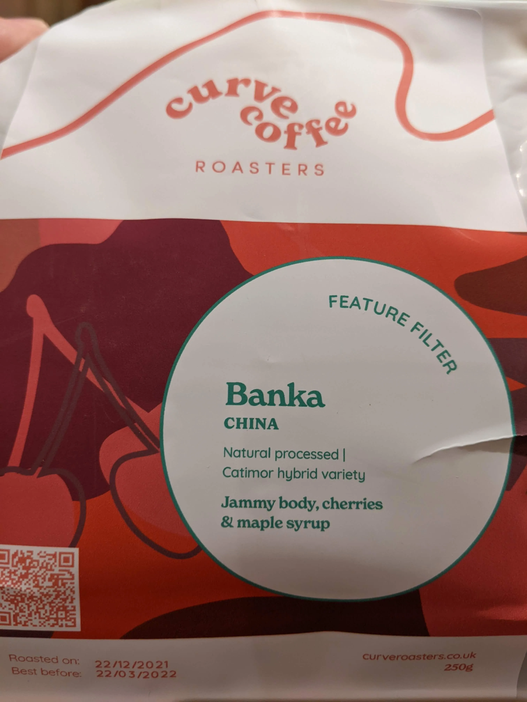
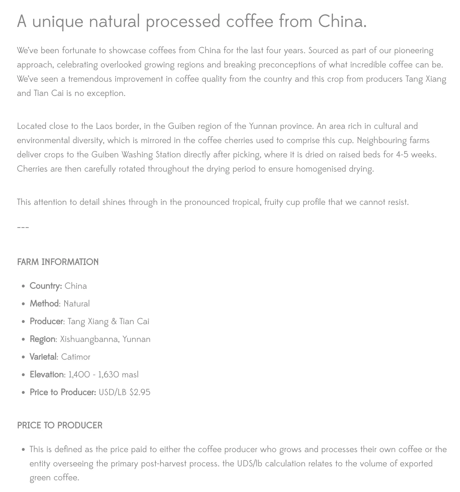
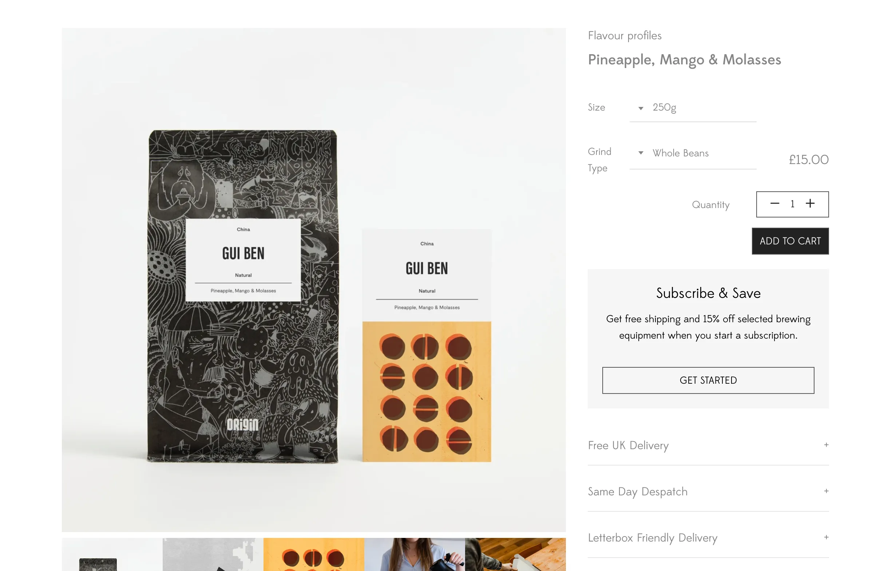
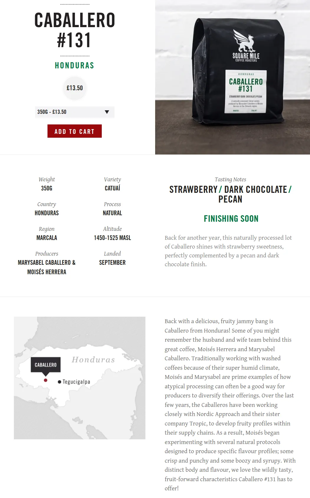
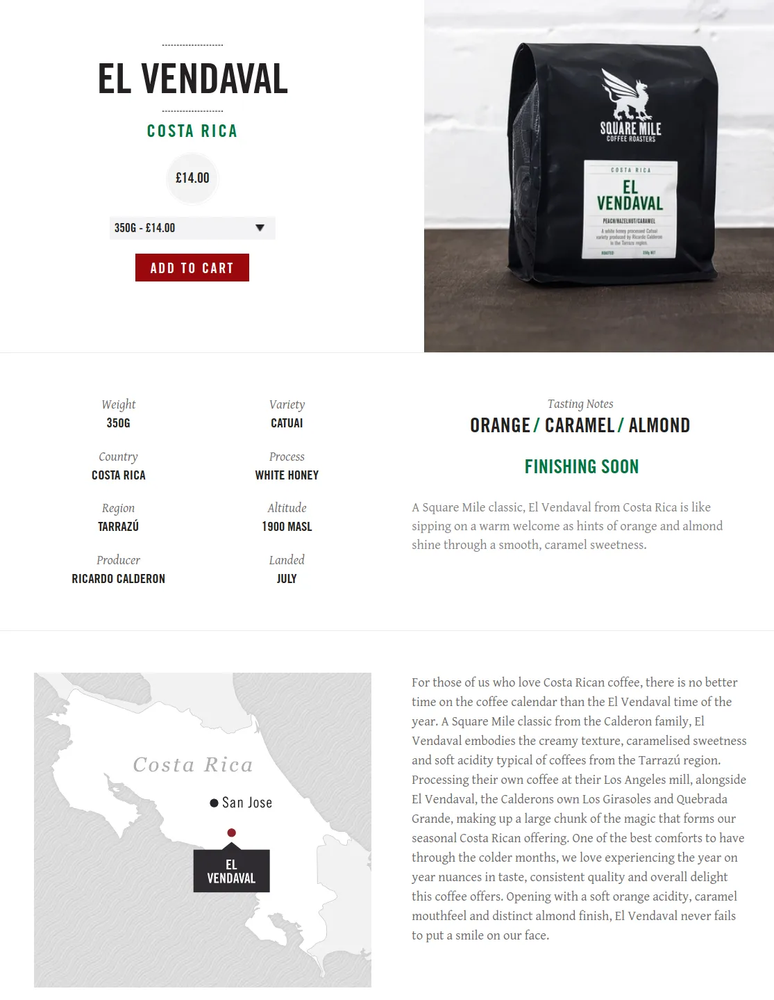
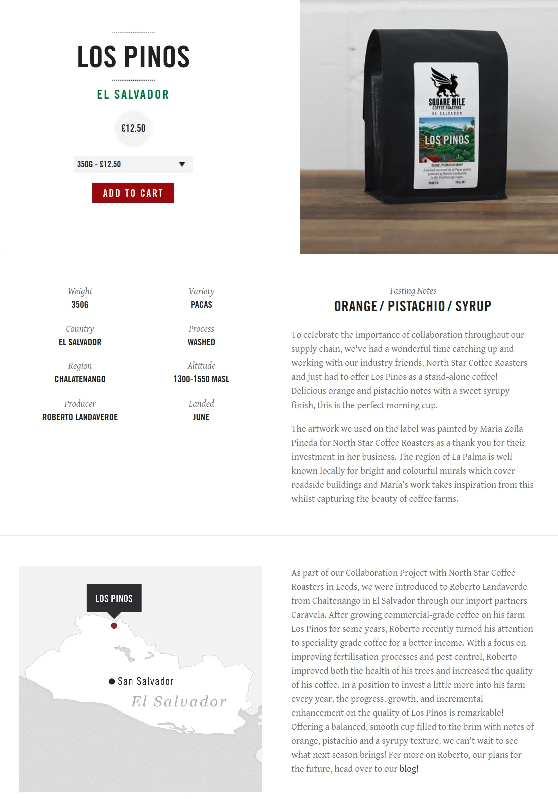
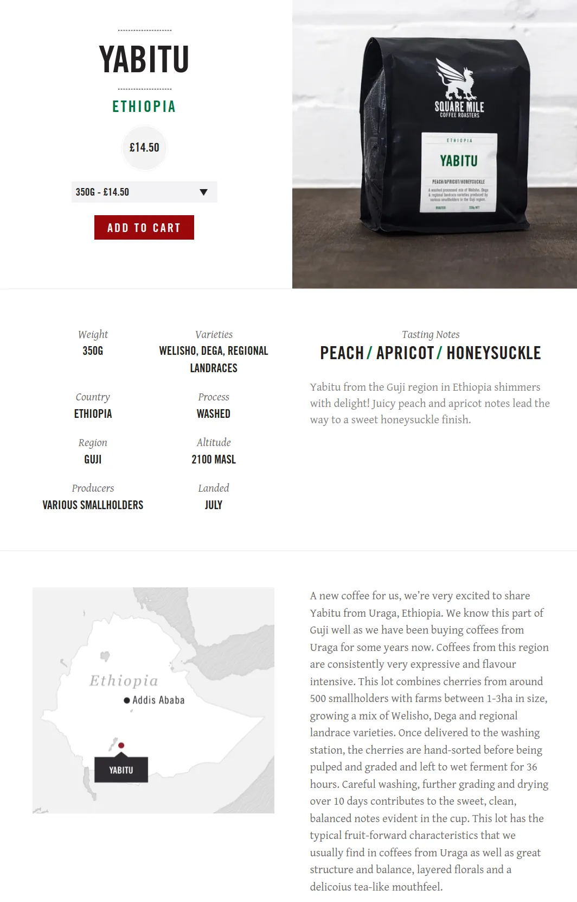

Brewed Coffee Beans
| Name | Roaster | Origin | Roast Level | Process | Tasting Notes |
|---|---|---|---|---|---|
| Shonora | Volcano | Ethiopia | Light | Natural | Lemon, Stone Fruits, Black Tea |
| Kamala Loa #1 | Assembly | Indonesia | Light | Natural | Pineapple, Papaya, Creamy |
| Juba | Ozone | Mexico | ? | Natural | Blueberry, Black Grape, Bubblegum |
| Konga | Origin | Ethiopia | Omni | Washed | Nectarine, Mandarin, Brown Sugar |
| Ou Yang | Origin | China | Omni | Natural | Stawberry wine, Lychee, Caramel |
| Abu Coffee #18 | Kawa | Panama | Filter | Geisha Natural | Blueberry, Jasmine, Framboise |
| Korate | Kawa | Ethiopia | Omni | Slow Dried | Citron, Lychee, Floral |
| Sitio Joaninha | Five Elephant | Brazil | ? | Natural | Coconut, Pear, Oolong tea |
| Mano Del Puma | Origin | El Salvador | Omni | Natural | Raspberry, Yellow Plum, Dark Chocolate |
| Zambrano | Origin | Panama | Omni | Natural | Nectarine, Cantaloupe, Caramel |
| Miraflores | Origin | Panama | Omni | Natural | Peach, Mango, Demerara Sugar |
| Nemba | Origin | Burundi | Omni | Washed | Blackberry, Clementine & Brown Sugar |
| Canya | Origin | Panama | Omni | Natural | Mandarin, Pineapple, Demerara Sugar |
| Aki | Origin | El Salvador | Omni | Natural | Mango, Grapefruit, Papaya |
| Aqi Badu | Origin | China | Omni | Natural | Pineapple, Persimmon & Dark Chocolate |
| Barokah | Origin | Indonesia | Omni | Natural | Strawberry, Grapefruit & Caramel |
| Barokah | Origin | Indonesia | Omni | Washed | Blackberry, Yuzu & Molasses |
| Elvis | Origin | Peru | Omni | Extended Fermentation | Raspberry, Lemongrass & Brown Sugar |
| Mensur Abahika | Ozone | Ethiopia | Omni | Natural | Blueberries, Cranberry, Jasmine |
| San Antonio | Origin | El Salvador | Omni | Black Honey | Raspberry, Apricot & Molasses |
| Lichia | Origin | Brazil | Omni | Anaerobic Fermentation | Apricot, Date, Milk Chocolate |
| San Fermin | Origin | Colombia | Omni | Washes | Orange Sherbet, Caramel, Berries |
| Tuberosa Decaf | Origin | Colombia | Omni | Sugarcane Decaf | Apple, Stewed Plum, Caramel |
| Wa Choo | Origin | China | Omni | Natural | Pink Grapefruit, Pomegranate, Dark Chocolate |
| Wa Choo | Origin | China | Omni | Washed | Blackberry, Elderflower & Sugarcane |
Konga
Konga washing station is situated in the Konga Kebele neighbourhood of the Yirgacheffe region. There are many sub regions in this area that produces outstanding coffee, and Gedeb is one of it.
There are numerous coffee washing stations in the neighbourhood of Konga Kebele in Yirgacheffe, all named the same: this means that coffee labelled Konga, doesn’t necessarily imply that it’s been produced by a singular farmer, producer, or washing station.
Around 1,200 small coffee holders contribute their coffee cherries to the Konga washing station, where Abiot Ageze and Mebrehatu Aynalem export under the name of Boledu Industrial Plc. With over 14 years coffee experience, the duo have been championing quality coffee, education, traceability, and better pricing for farmers. Coffee from Ethiopia may be complex, but it’s entirely worth the pursuit.
Ou Yang
The Coffee of Yunnan
a note from David Ou Yang
Not many people associate coffee and China, let alone an excellent specialty level single origin. Yes, China, or should I say Yunnan province, produces excellent coffee, so much so that many international coffee companies are now coming to Yunnan to source top quality beans.
Coffee farming in Yunnan has changed drastically over the last 30 years since its first introduction by French missionaries in the late nineteenth century. Commercial farming did not really take off until 1988 when the government, together with United Nations Development Program and the World Bank, initiated the coffee farming program which led to an increase in farmers growing coffee. The success of the program can be seen through the report by the International Coffee Organization in 2015, that China was the 14th largest coffee producer in the world.
With the expansion and increase of coffee farming and processing techniques the quality continues to get better and better. Over the last ten years more established and newly established coffee farms are pursing a more organic approach in growing coffee and specialty grade coffee.
Our Vision
Embrace diversity, unite people and resources through coffee for a better world
Our Mission
We are a community committed to produce the best organic coffee in an environmentally sustainable way
Our Values
We are quality driven
We are environmentally conscious
We value community, cultural diversity and hard work
We respect and care for each of our employees, their families and our community
We exercise social responsibility by giving back to our community
Mano Del Puma
A natural experimenter, Carlos developed the drying beds his farm San Antonio by using strings and mesh fabric, which offers great air flow. Underneath, dried coffee pulp is layered up, which creates more aroma via sunlight, grilling the coffee.
Mano del Puma is a delicate natural process coffee, with jammy acidity and a long chocolate-like finish.
Zambrano
When leaf rust disease destroyed their plantation, the family decided to grow companion crops such as tomatoes and courgettes alongside the trees, testing the productivity of their coffee, and the strength of their knowledge. With healthy crops that have been able to yield quality coffee in their first year (it usually takes three years for a tree to produce its first cherries), the Caballero’s hard work in nurturing their land has paid off.
Miraflores
Miraflores is a delicious example of innovation and perseverance. Expect summery sweetness with notes of peach, a pleasing acidity that nods to a tropical mango, and an indulgent finish of demerara sugar.
Origin
Despite huge challenges – including a loss of land on their plantation due to the Roya leaf rust decimating their crops – the Caballero family have adapted—and excelled. Based in Rio Sereno, Chiriqui, the family replicated planting and water irrigation techniques used in Brazil—and their hard work has paid off.
Nemba
Nemba brings clarity in the mouthfeel and crisp berry-like acidity throughout.
Nemba Washing Station is located in the Northern Province of Kayanza. Nemba collaborate with local smallholder producers to ensure they have access to the necessary farming tools and training, pre and post-harvest. The washing station uses a monitoring system to ensure traceability witihin the supply and process chain. 3,000+ local smallholders sell coffee cherries to the washing station daily during the harvest season.
Quality control starts once the cherries are delivered. The cherries are floated in small buckets to remove any defects, along with any remaining pulp. Cherries are then moved to cement tanks to ferment without water for 12 hours, and then submerged in local spring water for another 12-24 hours. Once the process is complete, the coffee was moved to raised drying beds for a further 2 to 3 weeks.
Canya
Enoc Caballero, his wife Yaneth, and their children Libney and Abner are the impressive team behind Canya.
Despite huge challenges, the family has adapted since we met in 2020; from the Roya leaf rust decimating their crops - resulting in the family replanting new Red Pacamara trees - to a loss of lands on their plantation. The results from their most recent harvest are truly remarkable.
The unique Pacamara varietal is a cross between the Pacas (a dwarf mutation of Bourbon) and Maragogype varietals. Trees are often smaller in size, producing some of the largest coffee seeds, which are world-renowned for their remarkable quality.
Aki
Part of the Pacamara Trio, this coffee is super tropical and a favourite of ours each harvest.
Three coffees, three countries, one varietal. Explore the our latest trio release which shines a spotlight on the Pacamara varietal - try all three coffees for £24.95
This is the eighth year we have showcased Carlos Pola’s delicious coffee, from the hills near the Santa Ana volcano. We have always been captivated by his passion to not only produce delicious coffee but to create innovative production techniques, which he then shares with fellow producers.
This Red Pacamara lot displays an interesting and dynamic tropical flavour profile. It’s born from a relationship between the giant Red Pacamara bean and Carlos’s careful processing.
Creating a coffee that is intensely sweet, displaying a flavour profile that is typical of the Red Pacamara bean: incredibly juicy, with tropical fruit highlights of mango, grapefruit and papaya.
Lichia
A cup bursting full of apricot-like qualities. Long-term relationships underpin our approach to coffee sourcing. Being open. Listening. Learning. Paying fairly. Working together to create an outstanding cup. This lot produced by Virgulino Muniz in Brazil, is a perfect example of that. Our partnership spans over 11 years and each year his crop seems to get better.
Named Lichia as it’s grown in an area on the Das Almas farm that is full of lychees, it has a Icatu varietal and was processed using an anaerobic fermentation technique. This involves placing washed coffee cherries in an airtight container to ferment for almost 3 days before being placed outside to dry. This method increases the acidic qualities and structure in the final cup which is bursting full of apricot-like qualities.
It’s so exciting to see Virgulino trying new innovative practices on a farm that been central to our work for so many years.
Tuberosa Decaf
This coffee is decaffeinated using an all-natural Sugarcane process.
Tuberosa is a collective effort by various small holders located in the Antioquia region of Colombia. Coffee from this region is special because it is grown in an ideal microclimate, with relatively cold weather and rich, mountainous soils. When choosing lots we look for coffees like Tuberosa that will work specifically well when decaffeinated; coffee that can undergo the Sugarcane process and still retain incredible flavour clarity in each cup.
This coffee is decaffeinated using our new and the all-natural Sugarcane process. This involves pressurising and expanding the coffee beans with light steam, before it's rinsed in Ethanol Acetate (EA), an organic compound created by the fermentation of non-GMO Colombian sugarcane. Mountain water and steam are then added to remove any remaining caffeine before the coffee is dried and delivered to the local quality control lab to grade quality.
Barokah
The Barokah Cooperative sits at the foot of Mount Kerinci, the highest active volcano in Indonesia. This area is located in the Ring of Fire, a path of over 450 volcanoes that wraps around the Pacific Ocean which is highly unstable with frequent eruptions and plate movements. Despite the unique environment, the volcanic soil is extremely lush and fertile, making it the perfect terroir for growing outstanding coffee.
The natural process requires the fewest number of steps at the washing station. Cherries are picked before being placed on patios to dry. They are then moved again onto raised beds which provides shade and better airflow. Typically, this process heightens the sweetness in the final cup.
Expect pronounced strawberry and grapefruit notes that sit alongside a long caramel-like finish.
Elvis
The 36 hour fermentation creates crisp raspberry acidity alongside citrus complexity.
We started our journey in Peru two years ago with our local partner Falcon Specialty. Falcon only works with producers, who aren’t members of a cooperative, association or organisation. These producers are the most vulnerable since they don’t have access to training sessions or premiums for quality or certifications, and their income is totally dependent on the market price..
This coffee is produced by Elvis Tineo Rafael, a second-generation coffee producer in El Diamante. We met him on our last trip and shared coffee and lunch together, to discuss his process.
His coffee was washed and floated before being macerated in the cherry for 12 hours, which provides more sweetness to the coffee. The coffee was then dried under shade for 15 days. This process intensifies the acidity and transforms the final coffee to provide a crisp mouthfeel and sugary sweetness.
FARM INFORMATION:
Country: Peru Method: Extended Fermentation Producer: Elvis Tineo Rafael Region: Jaen, Cajamarca Varietal: Cataui Elevation: 1,730 masl Price to Producer: USD/LB: N/A
San Fermin
San Fermin is what we call a ‘session coffee', something you can drink all day long.
San Fermin is a lot built from dozens of small producers in south Tolima. Etched out of the mountains, situated in some of the most remote locations each farm is only a few hectares. Farmers must cross rivers and trek through jungles before they can load dirt bikes and carts pulled by donkeys, to get the coffee to our partners at the local warehouse.
The producers of San Fermin are a key part of who we are, and we have two ongoing projects that celebrate that relationship. Our yearly producer competition recognises these truly exceptional lots. Additionally, we have committed to purchasing a drier with our local partners, Caravela. This will save the producers having to return the coffee all the way back to their farms if it still needs some further drying, saving them extra time and effort.
FARM INFORMATION
Country: Colombia Method: Washed Producer: 27 Producers Region: Tolima Varietal: Caturra Elevation: 1,600 - 2,000 masl Price to Producer: N/A
Banka
For cappuccino, the flavour is very balanced, it is not sour, not bitter, tastes perfect.
Producer: Small-holder farmers from the villages of Banka Yi and Banka Er Processed at: Banka washing station managed by Yunnan Coffee Traders
Region: Menglian Dai, Lahu and Va Autonomous County, Yunnan, China
Altitude: 1350 masl
Varietal: Catimor P3 & P4 Hybrid cultivars Process: Natural, fermented in cherry for 2 days then dried inside of a solar dryer on raised beds for roughly 20 days
Importer: Indochina Coffee
Cup profile: Jammy & thick body, dark cherries & maple syrup

Gui Ben
 
CABALLERO #131
These beans have a very strong chili paste smell and flavour, it is too much for my taste.

El Vendaval

Los Pinos

Yabitu
